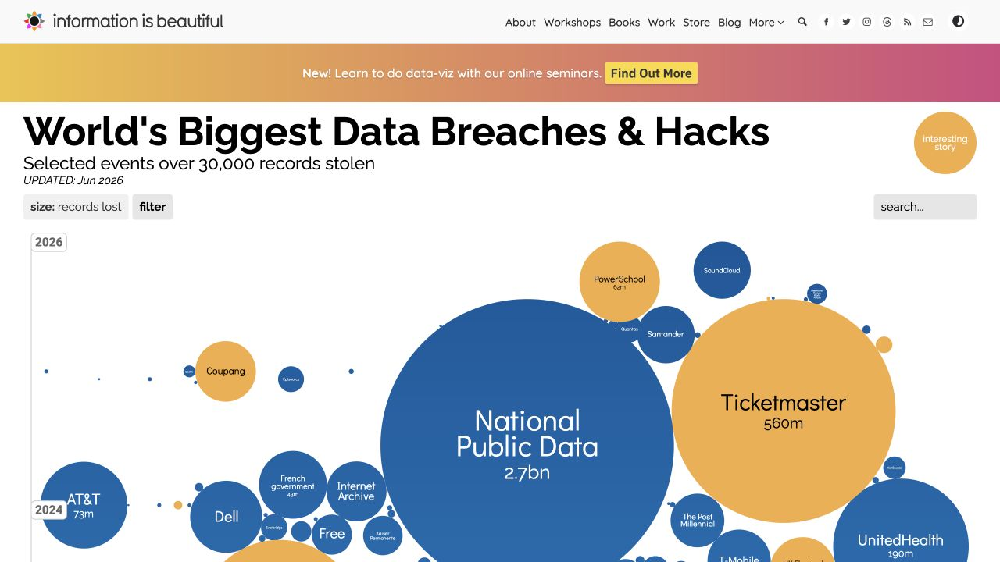

Visualization Critique and Redesign · Individual Project
Data Breaches in Context
See the history. Find an event. Understand its scale.
The original
A closer look at major data breaches
This project redesigns Information Is Beautiful’s World’s Biggest Data Breaches & Hacks. I kept its emphasis on scale, time, and individual stories, and worked on making crowded periods easier to explore.
About the data
The original’s source spreadsheet lists organizations, reporting years, reported quantities, industries, causes, and event descriptions. The redesign uses 539 events from 2004–2026, loaded by D3 from an external JSON file. Reported quantities can refer to accounts, documents, or images; they are not a count of unique people.
A timeline to explore
Major reported breaches, over time
Loading source data…
Bubble timeline
On small screens, scroll the chart sideways. Year controls and the event list also work with a keyboard.
No events match this selection.
Keep the whole timeline in view
Drag across the overview to focus on a period, or choose years below. Bar height counts listed events.
Identify events
Names behind the marks
Compare specific events
Selected records on a shared baseline
An initial example compares National Public Data with Ticketmaster. Choose up to three numeric events.
Select an event above, then choose “Add to comparison”.
What these data can and cannot show
These are selected, reported events, not a census of data breaches. Category counts and reporting-year patterns cannot establish industry risk or worldwide incidence. Records can mean accounts, documents, images, and other source units, not unique people. Quantities have not all been independently verified.
Events without comparable counts remain in the overview and named list but have no numeric position or proportional bubble. Tiny outlined rings are visibility targets; only solid circle area represents record count.
Source: Information is Beautiful · Original spreadsheet · External JSON · Data audit
Original and redesign
Preserve the overview, improve the inspection


Design argument
Critique and redesign
Project report · 645 words (body, excluding headings)
One-minute presentation ↗Reading the original
The title of Information Is Beautiful’s “World’s Biggest Data Breaches & Hacks” suggests that scale is central to the story. The contrast between large and small bubbles reinforces that message, while their chronological arrangement places individual incidents within a longer history. Familiar organization names give readers somewhere to start, and event descriptions and source links let them follow a story further. I read this as an invitation for a general audience to explore the scale and history of major breaches. My redesign aims to keep that experience while making individual events easier to find and compare.
The data come from the original’s linked spreadsheet. My D3 timeline loads an external JSON file containing 539 events from reporting years 2004–2026. Of these, 499 have usable numeric counts; the other 40 remain available in the list and overview. The full sheet includes entries below the original graphic’s stated 30,000-record threshold. Years refer to when stories were reported, which may differ from when breaches happened.
What works, and what gets in the way
The original has two strengths I wanted to preserve. Its size contrasts make major events immediately noticeable, giving the collection an impact that a table would lose. Its recognizable names and linked stories also turn abstract quantities into incidents that readers can investigate. Figure 1 shows an excerpt of this design.
The difficulty is reading beyond those initial impressions. Large circles occupy much of the space, leaving small events and nearby labels competing for attention. Comparing quantities is another problem: two circle areas are harder to judge than lengths starting from the same baseline, especially when values are similar. Category comparisons also require work because incidents from one industry or cause are spread across the timeline. The original already provides search and filters, but readers still need to locate individual values and remember them while comparing cases.
How the redesign responds
I kept the bubble timeline because it supports the original purpose. Solid circle area remains proportional to the reported count, and horizontal position shows reporting year. Circles are packed vertically to separate them; height does not represent another variable. Small outlined rings make tiny events easier to select without exaggerating their solid areas. The area scale stays fixed when the reader changes the year window.
A compact overview keeps the full timeline visible below the main chart. Readers can drag across a period or choose its starting and ending years, then narrow the selection by organization, industry, or cause. Focusing gives a dense period more horizontal space, while the overview shows where that period belongs in the full collection.
Labels identify major and selected events without covering their circles. A paginated list supplies names and printed quantities for every matching event, so readers do not have to identify everything from marks alone. Selecting a name opens its story, quantity, and available sources. Events without usable counts stay accessible here rather than receiving a misleading bubble size.
For direct comparison, readers can select up to three numeric events and see their quantities as linear bars starting at zero. Printed values support comparisons when one bar is much shorter than another. This gives the timeline a supporting tool for precise reading without making ranking the main experience.
What improves, and what remains difficult
Compared with Figure 1, the redesign in Figure 2 separates circles and offers a clearer route from the full collection to a few relevant cases. The timeline still communicates scale and history; the list and comparison bars help readers examine what they find.
There are still tradeoffs. Packing needs space, tiny circles remain difficult to see, and selective labels leave some work to the list. Source quantities can refer to accounts, documents, or images, so they are not equivalent to unique people. Values have not all been independently verified, and this curated collection cannot establish worldwide breach incidence or industry risk. I have not conducted a user study, so these are design reasons for expecting easier reading, rather than measured improvements.